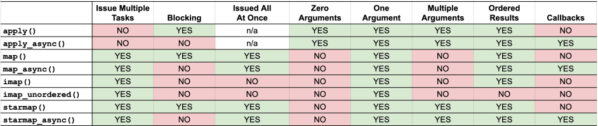

Multiprocessing Pool apply() vs map() vs imap() vs starmap()
The Python process pool provides many ways to issue tasks but no clear guidance on how to choose the best way to issue tasks for your application.
In this tutorial you will discover:
- The 8 ways to issue tasks to the process pool.
- How to use each approach to issue tasks to the process pool.
- The differences between each approach and how to choose the best approach.
Let's get started.
How to Issue Tasks to the Process Pool
The multiprocessing.pool.Pool provides a process pool that allows tasks to be issued and executed in parallel.
The pool provides 8 ways to issue tasks to workers in the process pool.
They are:
- Pool.apply()
- Pool.apply_async()
- Pool.map()
- Pool.map_async()
- Pool.imap()
- Pool.imap_unordered()
- Pool.starmap()
- Pool.starmap_async()
Let's take a closer and brief look at each approach in turn.
How to Use Pool.apply()
We can issue one-off tasks to the process pool using the apply() function.
The apply() function takes the name of the function to execute by a worker process. The call will block until the function is executed by a worker process, after which time it will return.
For example:
...
# issue a task to the process pool
pool.apply(task)The Pool.apply() function is a parallel version of the now deprecated built-in apply() function.
In summary, the capabilities of the apply() method are as follows:
- Issues a single task to the process pool.
- Supports multiple arguments to the target function.
- Blocks until the call to the target function is complete.
You can learn more about the apply() method in the tutorial:
How to Use Pool.apply_async()
We can issue asynchronous one-off tasks to the process pool using the apply_async() function.
Asynchronous means that the call to the process pool does not block, allowing the caller that issued the task to carry on.
The apply_async() function takes the name of the function to execute in a worker process and returns immediately with a AsyncResult object for the task.
It supports a callback function for the result and an error callback function if an error is raised.
For example:
...
# issue a task asynchronously to the process pool
result = pool.apply_async(task)Later the status of the issued task may be checked or retrieved.
For example:
...
# get the result from the issued task
value = result.get()In summary, the capabilities of the apply_async() method are as follows:
- Issues a single task to the process pool.
- Supports multiple arguments to the target function.
- Does not block, instead returns a AsyncResult.
- Supports callback for the return value and any raised errors.
You can learn more about the apply_async() method in the tutorial:
How to Use Pool.map()
The process pool provides a parallel version of the built-in map() function for issuing tasks.
The map() function takes the name of a target function and an iterable. A task is created to call the target function for each item in the provided iterable. It returns an iterable over the return values from each call to the target function.
The iterable is first traversed and all tasks are issued at once. A chunksize can be specified to split the tasks into groups which may be sent to each worker process to be executed in batch.
For example:
...
# iterates return values from the issued tasks
for result in pool.map(task, items):
# ...
The Pool.map() function is a parallel version of the built-in map() function.
In summary, the capabilities of the map() method are as follows:
- Issue multiple tasks to the process pool all at once.
- Returns an iterable over return values.
- Supports a single argument to the target function.
- Blocks until all issued tasks are completed.
- Allows tasks to be grouped and executed in batches by workers.
You can learn more about the map() method in the tutorial:
How to Use Pool.map_async()
The process pool provides an asynchronous version of the built-in map() function for issuing tasks called map_async().
The map_async() function takes the name of a target function and an iterable. A task is created to call the target function for each item in the provided iterable. It does not block and returns immediately with an AsyncResult that may be used to access the results.
The iterable is first traversed and all tasks are issued at once. A chunksize can be specified to split the tasks into groups which may be sent to each worker process to be executed in batch. It supports a callback function for the result and an error callback function if an error is raised.
For example:
...
# issue tasks to the process pool asynchronously
result = pool.map_async(task, items)Later the status of the tasks can be checked and the return values from each call to the target function may be iterated.
For example:
...
# iterate over return values from the issued tasks
for value in result.get():
# ...
In summary, the capabilities of the map_async() method are as follows:
- Issue multiple tasks to the process pool all at once.
- Supports a single argument to the target function.
- Does not not block, instead returns a AsyncResult for accessing results later.
- Allows tasks to be grouped and executed in batches by workers.
- Supports callback for the return value and any raised errors.
You can learn more about the map_async() method in the tutorial:
How to Use Pool.imap()
We can issue tasks to the process pool one-by-one via the imap() function.
The imap() function takes the name of a target function and an iterable. A task is created to call the target function for each item in the provided iterable.
It returns an iterable over the return values from each call to the target function. The iterable will yield return values as tasks are completed, in the order that tasks were issued.
The imap() function is lazy in that it traverses the provided iterable and issues tasks to the process pool one by one as space becomes available in the process pool. A chunksize can be specified to split the tasks into groups which may be sent to each worker process to be executed in batch.
For example:
...
# iterates results as tasks are completed in order
for result in pool.imap(task, items):
# ...
The Pool.imap() function is a parallel version of the now deprecated itertools.imap() function.
In summary, the capabilities of the imap() method are as follows:
- Issue multiple tasks to the process pool, one-by-one.
- Returns an iterable over return values.
- Supports a single argument to the target function.
- Blocks until each task is completed in order they were issued.
- Allows tasks to be grouped and executed in batches by workers.
You can learn more about the imap() method in the tutorial:
How to Use Pool.imap_unordered()
We can issue tasks to the process pool one-by-one via the imap_unordered() function.
The imap_unordered() function takes the name of a target function and an iterable. A task is created to call the target function for each item in the provided iterable.
It returns an iterable over the return values from each call to the target function. The iterable will yield return values as tasks are completed, in the order that tasks were completed, not the order they were issued.
The imap_unordered() function is lazy in that it traverses the provided iterable and issues tasks to the process pool one by one as space becomes available in the process pool. A chunksize can be specified to split the tasks into groups which may be sent to each worker process to be executed in batch.
For example:
...
# iterates results as tasks are completed, in the order they are completed
for result in pool.imap_unordered(task, items):
# ...
In summary, the capabilities of the imap_unordered() method are as follows:
- Issue multiple tasks to the process pool, one-by-one.
- Returns an iterable over return values.
- Supports a single argument to the target function.
- Blocks until each task is completed in the order they are completed.
- Allows tasks to be grouped and executed in batches by workers.
You can learn more about the imap_unordered() method in the tutorial:
How to Use Pool.starmap()
We can issue multiple tasks to the process pool using the starmap() function.
The starmap() function takes the name of a target function and an iterable. A task is created to call the target function for each item in the provided iterable. Each item in the iterable may itself be an iterable, allowing multiple arguments to be provided to the target function.
It returns an iterable over the return values from each call to the target function. The iterable is first traversed and all tasks are issued at once. A chunksize can be specified to split the tasks into groups which may be sent to each worker process to be executed in batch.
For example:
...
# iterates return values from the issued tasks
for result in pool.starmap(task, items):
# ...
The Pool.starmap() function is a parallel version of the itertools.starmap() function.
In summary, the capabilities of the starmap() method are as follows:
- Issue multiple tasks to the process pool all at once.
- Returns an iterable over return values.
- Supports multiple arguments to the target function.
- Blocks until all issued tasks are completed.
- Allows tasks to be grouped and executed in batches by workers.
You can learn more about the starmap() method in the tutorial:
How to Use Pool.starmap_async()
We can issue multiple tasks asynchronously to the process pool using the starmap_async() function.
The starmap_async() function takes the name of a target function and an iterable. A task is created to call the target function for each item in the provided iterable. Each item in the iterable may itself be an iterable, allowing multiple arguments to be provided to the target function.
It does not block and returns immediately with an AsyncResult that may be used to access the results.
The iterable is first traversed and all tasks are issued at once. A chunksize can be specified to split the tasks into groups which may be sent to each worker process to be executed in batch. It supports a callback function for the result and an error callback function if an error is raised.
For example:
...
# issue tasks to the process pool asynchronously
result = pool.starmap_async(task, items)Later the status of the tasks can be checked and the return values from each call to the target function may be iterated.
For example:
...
# iterate over return values from the issued tasks
for value in result.get():
# ...
In summary, the capabilities of the starmap_async() method are as follows:
- Issue multiple tasks to the process pool all at once.
- Supports multiple arguments to the target function.
- Does not not block, instead returns a AsyncResult for accessing results later.
- Allows tasks to be grouped and executed in batches by workers.
- Supports callback for the return value and any raised errors.
You can learn more about the starmap_async() method in the tutorial:
How To Choose The Method
There are so many methods to issue tasks to the process pool, how do you choose?
Some properties we may consider when comparing functions used to issue tasks to the process pool include:
- The number of tasks we may wish to issue at once.
- Whether the function call to issue tasks is blocking or not.
- Whether all of the tasks are issued at once or one-by-one
- Whether the call supports zero, one, or multiple arguments to the target function.
- Whether results are returned in order or not.
- Whether the call supports callback functions or not.
The table below summarizes each of these properties and whether they are supported by each call to the process pool.
A YES (green) cell in the table does not mean "good". It means that the function call has a given property which may or may not be useful or required for your specific use case.

You can view or download a large version of this table here:
{kind=link}
Let's take a look at each one of these considerations in turn.
One Task vs Multiple Tasks
An important consideration is whether you have one task to issue to the process pool or multiple tasks.
A single task may be issued to the process pool as a call to a target function via the apply() or apply_async() function.
Multiple calls may be issued to the process pool by specifying a target function and an iterable of arguments for each call to the target function. This can be achieved with map(), map_async(), imap(), imap_async(), starmap(), and starmap_async().
Issue Single Task
- Use apply()
- Use apply_async()
Issue Multiple Tasks
- Use map()
- Use map_async()
- Use imap()
- Use imap_unordered()
- Use starmap()
- Use starmap_async()
Blocking vs Non-Blocking
Another important consideration when issuing tasks is whether the function used to issue the task blocks until the tasks are complete or not.
Recall that a blocking call does not return until the call is complete. This means the caller cannot perform any actions until all tasks are issued and finished.
Blocking calls to the process pool include apply(), map(), and starmap().
A non-blocking call returns immediately and provides a hook or mechanism to check the status of the tasks and get the results later. The caller can issue tasks and carry on with the program.
Non-blocking calls to the process pool include apply_async(), map_async(), and starmap_async().
The imap() and imap_unordered() are interesting. They return immediately, so they are technically non-blocking calls. The iterable that is returned will yield return values as tasks are completed. This means traversing the iterable will block.
Blocking Calls
- Use apply()
- Use map()
- Use starmap()
Non-blocking Calls
- Use apply_async()
- Use map_async()
- Use imap()
- Use imap_unordered()
- Use starmap_async()
Lazy vs Non-Lazy
Those calls that issue multiple tasks may operate in one of two ways.
They issue all tasks to the process pool immediately. This means that the provided iterable is traversed and all calls to the target function and yielded arguments are transformed into tasks and held in memory.
We might refer to these functions as non-lazy. They include map(), map_async(), starmap() and starmap_async().
Other functions issue tasks to the process pool one-at-a-time, only as space becomes available in the process pool to execute new tasks. This means that the provided iterable is traversed one item at a time in order to create and issue tasks on demand.
We might refer to these functions as lazy and may be more memory efficient. They include imap() and imap_unordered().
Lazy Calls (one-by-one)
- Use imap()
- Use imap_unordered()
Non-Lazy Calls (all at once)
- Use apply()
- Use apply_async()
- Use map()
- Use map_async()
- Use starmap()
- Use starmap_async()
Single Argument vs Multiple Arguments
The target task function may or may not take arguments.
If it takes arguments, it may take a single argument or more than one argument.
The number of arguments to the target function will limit the functions that may be used to issue tasks.
For example, the apply() and apply_async() function support a target function that takes no arguments.
All of the functions support a target function that takes a single argument.
Only the apply(), apply_async(), starmap(), and starmap_async() functions support target functions with more than one argument.
Target Function With No Arguments
- Use apply()
- Use apply_async()
Target Function With One Argument
- Use apply()
- Use apply_async()
- Use map()
- Use map_async()
- Use imap()
- Use imap_unordered()
- Use starmap()
- Use starmap_async()
Target Function with Multiple Arguments
- Use apply()
- Use apply_async()
- Use starmap()
- Use starmap_async()
Ordered Results vs Unordered Results
When multiple tasks are issued to the process pool, and the target function returns a value, we may traverse the iterable of return values.
The iterable may yield return values in the order that tasks were issued, e.g. in an order that matches the provided iterable of items to the call, or return values may be returned out of order.
Out of order means that we may not be able to easily relate the return value to the input to the target function.
Most of the calls will return an iterable that yields return values in order, specifically: map(), map_async(), imap(), starmap(), and starmap_async().
Only the imap_unordered() function will return an iterable that yields return values out of order. Specifically, they are yielded in the order that the issued tasks are completed.
Ordered Results
- Use map()
- Use map_async()
- Use imap()
- Use starmap()
- Use starmap_async()
Unordered Results
- Use imap_unordered()
Result Callbacks vs No Result Callbacks
Some of the calls to issue tasks may support callbacks.
This includes callbacks to handle the return values from the target function or callbacks to handle errors raised while executing the target function.
Those calls that support callbacks include: apply_async(), map_async(), and starmap_async(). These are those calls that are explicitly asynchronous, e.g. non-blocking.
The rest of the calls do not support callbacks, including: apply(), map(), imap(), imap_unordered(), and starmap().
Supports Callbacks
- Use apply_async()
- Use map_async()
- Use starmap_async()
Do Not Support Callbacks
- Use apply()
- Use map()
- Use imap()
- Use imap_unordered()
- Use starmap()
Next, let's directly compare some of the methods used to issue tasks to the process pool.
Compare Methods
Many of the methods used to issue tasks to the process pool have a similar name.
For example:
- apply() and apply_async()
- map() and map_async()
- imap() and imap_unordered()
- starmap() and starmap_async()
There are also some more general comparison we might like to make, for example:
- map() and built-in map()
- starmap() and itertools.starmap()
- imap() and map()
To better understand the capability of each method it can be helpful to directly compare and contrast among the methods.
In this section we will briefly look at the differences among methods with like names.
apply() vs apply_async()
Both the apply() and apply_async() may be used to issue one-off tasks to the process pool.
The main differences are as follows:
- The apply() function blocks, whereas the apply_async() function does not block.
- The apply() function returns the result of the target function, whereas the apply_async() function returns an AsyncResult.
- The apply() function does not take callbacks, whereas the apply_async() function does take callbacks.
The apply() function should be used for issuing target task functions to the process pool where the caller can or must block until the task is complete.
The apply_async() function should be used for issuing target task functions to the process pool where the caller cannot or must not block while the task is executing.
map() vs map_async()
Both the map() and map_async() may be used to issue tasks that call a function to all items in an iterable via the process pool.
The main differences are as follows:
- The map() function blocks, whereas the map_async() function does not block.
- The map() function returns an iterable of return values from the target function, whereas the map_async() function returns an AsyncResult.
- The map() function does not support callback functions, whereas the map_async() function can execute callback functions on return values and errors.
The map() function should be used for issuing target task functions to the process pool where the caller can or must block until all function calls are complete.
The map_async() function should be used for issuing target task functions to the process pool where the caller cannot or must not block while the task is executing.
imap() vs imap_unordered()
The imap() and imap_unordered() functions have a lot in common, such as:
- Both the imap() and imap_unordered() may be used to issue tasks that call a function to all items in an iterable via the process pool.
- Both the imap() and imap_unordered() are lazy versions of the map() function.
- Both the imap() and imap_unordered() functions return an iterable over the return values immediately.
Nevertheless, there is one key difference between the two functions:
- The iterable returned from imap() yields results in order as they are completed, whereas the imap_unordered() function yields results in an arbitrary order in which tasks are completed.
The imap() function should be used when the caller needs to iterate return values in the order that they were submitted from tasks as they are completed.
The imap_unordered() function should be used when the caller needs to iterate return values in any arbitrary order (not the order that they were submitted) from tasks as they are completed.
starmap() vs starmap_async()
Both the starmap() and starmap_async() may be used to issue tasks that call a function in the process pool with more than one argument.
The main differences are as follows:
- The starmap() function blocks, whereas the starmap_async() function does not block.
- The starmap() function returns an iterable of return values from the target function, whereas the starmap_async() function returns an AsyncResult.
- The starmap() function does not support callback functions, whereas the starmap_async() function can execute callback functions on return values and errors.
The starmap() function should be used for issuing target task functions to the process pool where the caller can or must block until all function calls are complete.
The starmap_async() function should be used for issuing target task functions to the process pool where the caller cannot or must not block while the task is executing.
Pool.map() vs built-in map()
Both the Pool.map() function and the built-in map() function traverse a provided iterable and execute a target function passing the item from an iterable to the target function.
The main differences are as follows:
- The Pool.map() function will traverse the iterable immediately in order to issue all tasks, whereas the built-in map() function is lazy and will traverse the iterable only as the returned iterable of return values from the target function is traversed.
- The Pool.map() function will execute each call to the target function in parallel using a child worker process, whereas the built-in map() function will execute each call to the target function in the current process.
- The Pool.map() function supports a single iterable for a target function that takes a single argument, whereas the built-in map function supports multiple iterables, one for each argument to the target function.
- The Pool.map() function supports a chunksize for batching calls to the target function in child processes, whereas the built-in map() function has no support for batching calls to the target function.
The Pool.map() function should be used to execute calls to a target function in parallel.
The built-in map() function should be used to execute calls to the target function sequentially and lazily.
Pool.starmap() vs itertools.starmap()
Both Pool.starmap() and itertools.starmap() functions execute a target function that may have multiple arguments with a provided iterable where each item is an iterable of arguments for each function call.
The main differences are as follows:
- The Pool.starmap() function will traverse the iterable immediately in order to issue all tasks, whereas the built-in itertools.starmap() function is lazy and will traverse the iterable only as the returned iterable of return values from the target function is traversed.
- The Pool.starmap() function will execute each call to the target function in parallel using a child worker process, whereas the built-in itertools.starmap() function will execute each call to the target function in the current process.
- The Pool.starmap() function supports a chunksize for batching calls to the target function in child processes, whereas the itertools.starmap() function has no support for batching calls to the target function.
The Pool.starmap() function should be used to execute calls to a target function with multiple arguments in parallel.
The itertools.starmap() function should be used to execute calls to the target function with multiple arguments sequentially and lazily.
imap() vs map()
Both the imap() and map() may be used to issue tasks that call a function to all items in an iterable via the process pool.
The main differences are as follows:
- The imap() function issues one task at a time to the process pool, the map() function issues all tasks at once to the pool.
- The imap() function blocks until each task is complete when iterating the return values, the map() function blocks until all tasks complete when iterating return values.
The imap() function should be used for issuing tasks one-by-one and processing the results for tasks in order as they are available.
The map() function should be used for issuing all tasks at once and processing results in order only once all issued tasks have completed.
Next, let's consider some common questions related to issuing tasks to the process pool.
Common Questions
This section lists common questions about issuing tasks to the process pool and their answers.
Do you have any questions about issuing tasks to the process pool?
Ask your questions in the comments below and I may add them to this section.
How to Issue a Single Task to the Process Pool?
You can issue a single task to the process pool using the apply() or apply_async() functions.
How to Issue Tasks When the Target Function Has No Arguments?
You can issue tasks to call a target function that has no arguments using the apply() or apply_async() functions.
How to Call map() For a Function With Multiple Arguments?
You can use the starmap() or starmap_async() function to issue tasks to the process pool for a target function that takes multiple arguments.
How to Issue Tasks Asynchronously?
You can issue tasks to the process pool asynchronously using the apply_async(), map_async(), and starmap_async() functions.
Additionally, the imap() and imap_unordered() functions do not block.
Is the imap_unordered() Asynchronous?
No, but kind-of.
The imap_unordered() is not asynchronous in the same way as the apply_async(), map_async(), and starmap_async() functions. Specifically, it does not return an AsyncResult object.
Nevertheless, the imap_unordered() function, like the imap() function, does not block. Instead it returns immediately and only blocks when attempting to retrieve a result from an issued task by traversing the returned iterable.
In this way, the imap_unordered() can be used asynchronously.
Is There a imap_async() Function?
No.
This may be because the imap_unordered() function provided by the API is already asynchronous in that it does not block. However, the imap_unordered() function does not return an AsyncResult object.
Why Ever Use apply()
If a call apply() blocks, why even bother to use it? Why not call the function directly?
The main reason is so that the function call is executed in a separate child process.
How Do You Call Many Different Target Functions?
We can call multiple different target functions by using apply() or apply_async(), perhaps in a loop.
We might also call multiple different functions by using multiple separate calls to the map(), map_async(), imap(), imap_unordered(), starmap() and starmap_async() functions.
Why Bother Use imap() Instead of map()
You would use imap() instead of map() so that you can start working with results as they become available instead of blocking and waiting until all results are available.
Also, imap() uses less memory because it lazily traverses the provided input iterable in order to issue tasks as needed.
How Do You Best Set chunksize?
The map(), imap(), and starmap() functions take a "chunksize" argument.
The chunksize specifies how many calls to the target function to group and send to a worker child process in batch.
This can speed-up the overall task by reducing the computational overhead of sending data arguments to child processes and receiving results from child processes.
The best value for chunksize depends on your application, specifically on the tasks being executed, how long they take, on the data sent to each task and on the data returned from each task.
You can find an optimal chunksize value with some trial and error and careful benchmark.
Some values to try:
- chunksize=1, the default of no chunking.
- chunksize = number of tasks / number of workers, an even split.
- chunksize = number of tasks / number of workers * 0.25, a fraction of an even split.
Takeaways
You now know how to issue tasks to the process pool and choose among the various methods to find the best approach for your specific use case.